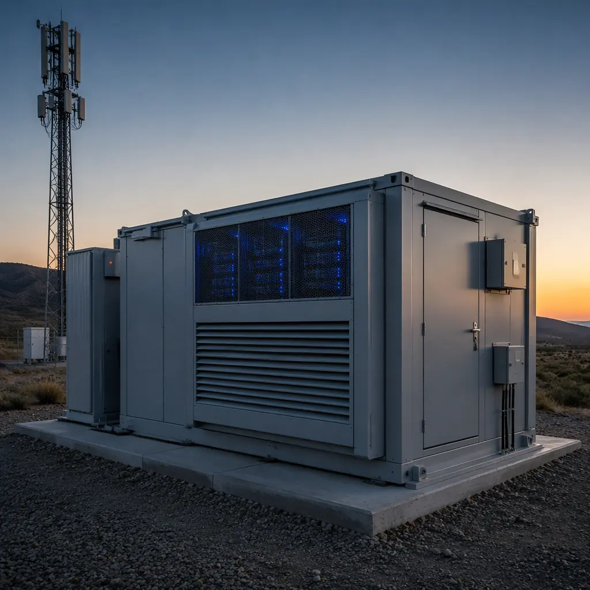
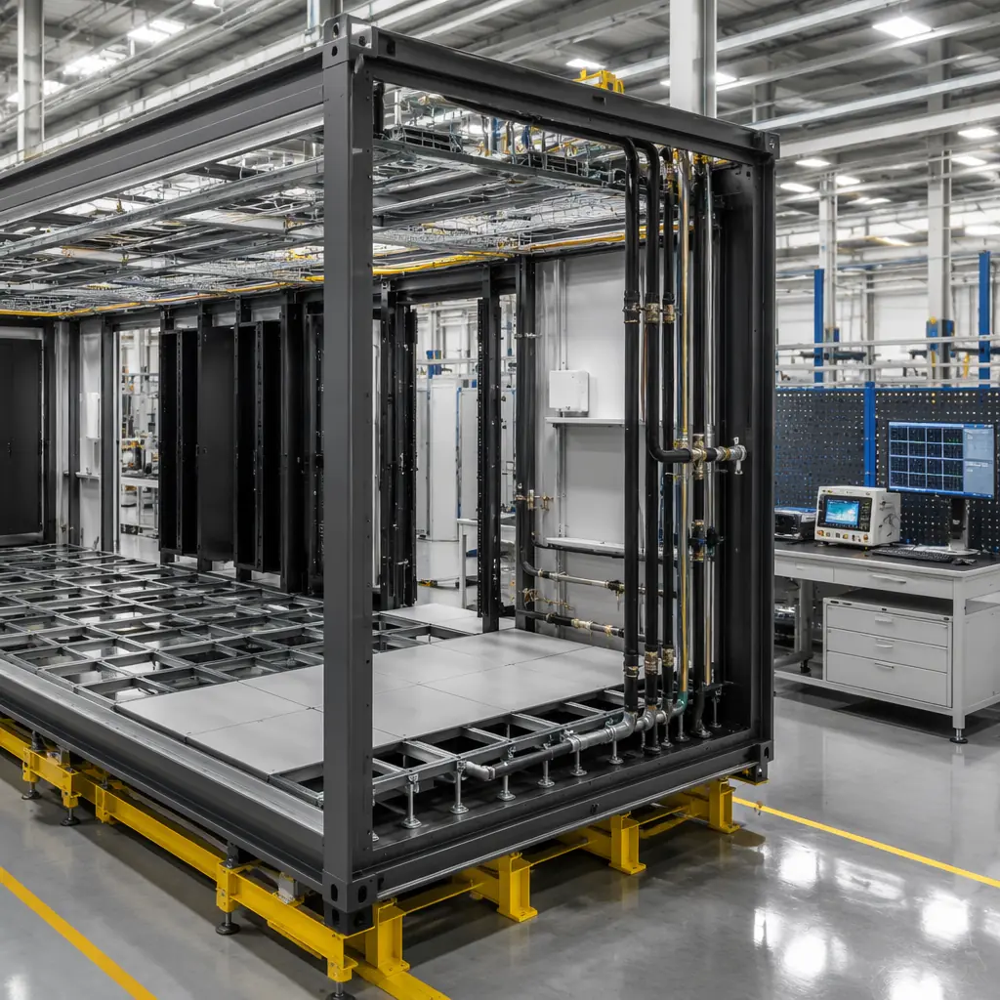
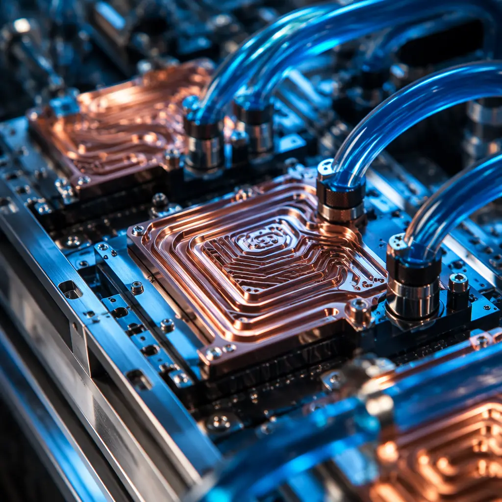
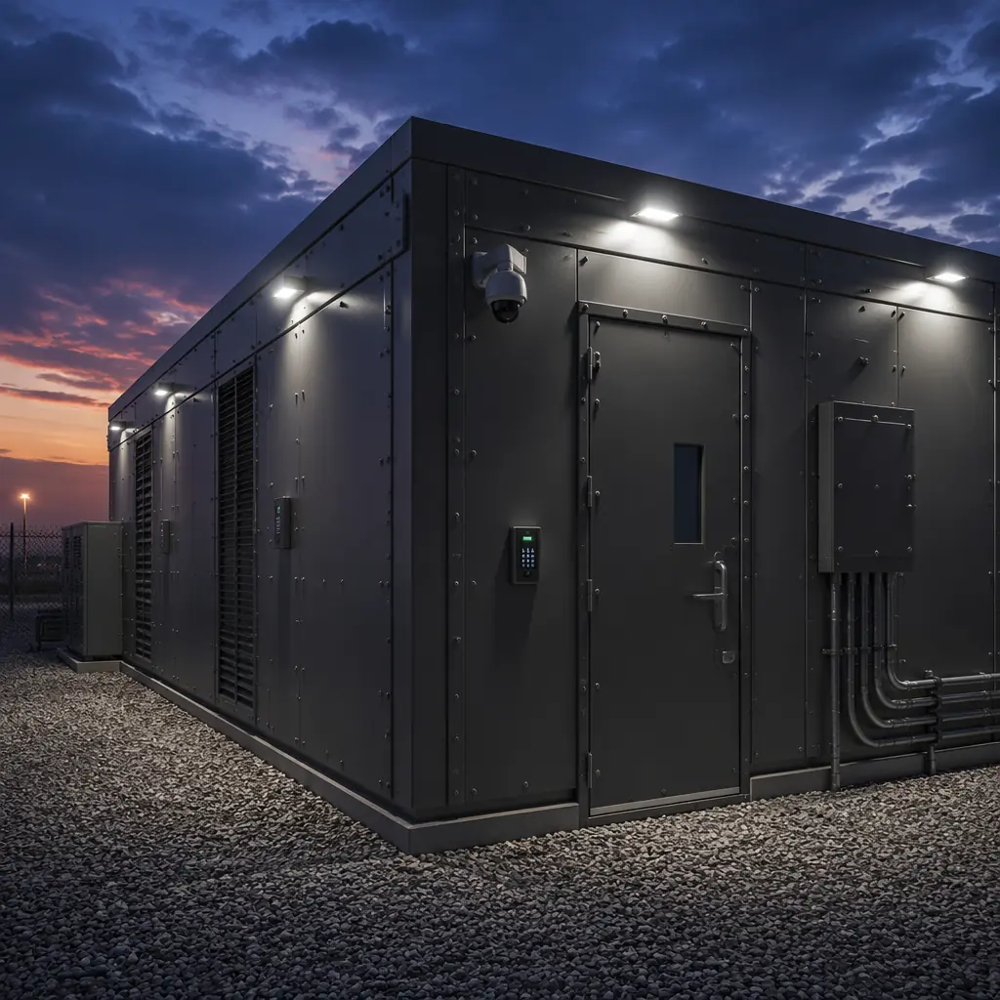
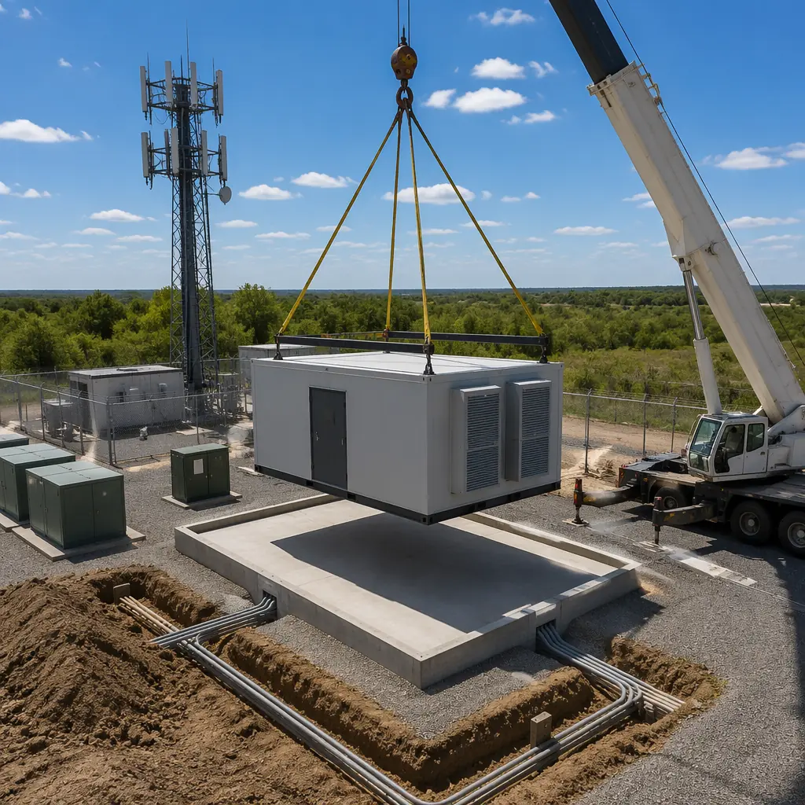

The edge computing market is projected to reach $156 billion by 2030, driven by 5G rollout, autonomous systems, and the proliferation of IoT devices generating data that cannot afford the 50–100 millisecond round-trip to a centralized cloud data center. Yet the construction model for edge infrastructure is broken: a traditional micro data center takes 8–14 months to permit, build, and commission — while the telecom operator or content delivery network waiting for that capacity loses revenue every month the site sits dark. Modular prefabricated edge data centers cut this timeline to 14–20 weeks, delivering Tier II–III certified facilities that can be deployed at cell tower bases, enterprise campuses, and remote industrial sites with the same quality control as a hyperscale data hall.

Why Edge Computing Needs a Different Construction Model
Hyperscale data centers follow a well-understood formula: find 50–200 acres of cheap land with power and fiber, spend 18–24 months building, then fill it with thousands of racks. Edge data centers invert every assumption in that model:
- Site footprint is measured in square meters, not acres. An edge node serving a 5G metro area might require 20–50 m² of conditioned space, not 20,000 m². Traditional construction methods carry disproportionate mobilization costs at this scale — sending a general contractor and three subcontractors to a cell tower compound for a 30 m² building is economically irrational.
- Permitting and zoning timelines dominate total project duration. For a 24-month hyperscale build, 3 months of permitting is 12% of the schedule. For a 6-month edge build, 3 months of permitting is 50%. Modular construction compresses the on-site work window to 6–8 weeks, making it easier to secure time-limited permits and reducing exposure to municipal review cycles.
- Site count scales rapidly. A telecom operator rolling out 5G multi-access edge computing (MEC) might need 50–200 edge nodes in a single region over 18 months. Traditional construction cannot scale to this volume without massive quality variability across sites. Factory-built modules deliver identical quality at every site, because 85% of the work happens under controlled factory conditions rather than in 50 different muddy construction sites.
- Remote sites lack skilled trades. An edge data center in a rural highway corridor or an industrial park 200 km from the nearest city has no access to the specialized electricians and HVAC technicians that data center construction requires. A factory-built module arrives with power distribution, cooling, fire suppression, and physical security pre-integrated — the site team only connects external utilities and commissions the systems.
These aren't hypothetical constraints. Equinix reported that edge site acquisition and construction now represents 38% of its total infrastructure cost per deployed megawatt at the edge — higher than the IT equipment inside the facility. As we demonstrated in our analysis of modular data center construction, factory production eliminates the fundamental economics problem of small-site construction.
Edge Data Center Architecture: Purpose-Built Modules
An edge data center is not a shipping container with servers bolted inside. MODURA edge modules are purpose-engineered structural steel enclosures with integrated building systems, delivered as turnkey conditioned spaces. The architecture breaks into five standardized module types that can be combined to meet specific site requirements:
| Module Type | Capacity | Power Density | Typical Deployment |
|---|---|---|---|
| Edge-10 Micro Node | 3–6 racks, 10–15 m² | 5–15 kW/rack | 5G RAN edge, retail CDN cache |
| Edge-25 Mid-Tier | 8–14 racks, 20–35 m² | 10–25 kW/rack | Enterprise campus, industrial IoT aggregation |
| Edge-50 Regional Hub | 20–40 racks, 50–80 m² | 15–30 kW/rack | Metro aggregation, AI inference cluster |
| Edge-GPU Module | 4–8 racks, 20–30 m² | 30–50 kW/rack | AI training/inference at edge, liquid-cooled |
| Edge-Power Module | UPS + switchgear, 15–25 m² | N/A (infrastructure) | Paired with any compute module |
Modules are factory-tested as complete subsystems before shipping. Each unit undergoes a 72-hour integrated systems test that verifies cooling performance at full design load, UPS failover under simulated utility loss, fire suppression discharge paths, and physical security systems. This factory commissioning catches integration issues that would otherwise surface during site acceptance testing — where fixes cost 3–5× more in field labor and schedule delay.

Cooling Strategies for Edge Environments
Edge sites impose cooling constraints that don't exist in purpose-built data center campuses. A hyperscale facility can install a 5 MW chiller plant with N+1 redundancy. An edge node at a cell tower base has neither the space nor the utility capacity for chilled water infrastructure. Modular edge data centers address this with cooling architectures selected during module design:
- Direct expansion (DX) with economizer: For Edge-10 and Edge-25 modules in temperate climates, integrated DX cooling with an air-side economizer provides 1.15–1.25 PUE at design conditions. When outside air temperature drops below 18°C, the economizer bypasses mechanical cooling entirely, reducing annual energy consumption by 25–35% compared to DX-only operation. This is the default configuration for most edge deployments below 50 kW total load.
- Direct-to-chip liquid cooling: For Edge-GPU modules running 30–50 kW/rack, air cooling hits its physical limit at approximately 25 kW/rack even with containment optimization. Direct-to-chip cold plate cooling captures 70–80% of server heat at the source, reducing the remaining air-cooled load to manageable levels. The liquid cooling loop is factory-integrated with quick-connect couplings at the module boundary, enabling connection to an external dry cooler or facility water loop without field plumbing work.
- Immersion cooling for ultra-high density: Single-phase immersion cooling submerges servers in dielectric fluid, achieving cooling capacities above 100 kW per rack. While still rare in edge deployments, the architecture is gaining traction for AI inference clusters at regional hubs where power density demands exceed what direct-to-chip can deliver. MODURA Edge modules can be configured with integrated immersion tanks, including fluid filtration and heat exchange systems pre-piped to module boundaries.
The key insight: unlike traditional construction where cooling decisions made at design development are locked in through 18 months of construction, a modular approach allows the operator to select the cooling architecture that matches the current workload profile. If an edge node transitions from general compute to AI inference, swapping an Edge-25 for an Edge-GPU module is a matter of procurement lead time — not a building retrofit. This aligns with the principles in our MEP systems integration guide, where we demonstrated that factory-pre-integrated mechanical and electrical systems reduce commissioning time by 50%.

Physical Security and Resilience at Unmanned Sites
Hyperscale data centers are staffed 24/7 with dedicated security teams, multi-layer perimeter controls, and redundant everything. Edge data centers are unmanned. Most edge nodes are visited by a technician once every 4–6 weeks for preventive maintenance, and the remaining 97% of the time they operate autonomously. This changes the physical security equation entirely:
- Hardened enclosure: MODURA edge modules use 14-gauge steel exterior panels with tamper-resistant fasteners and a structural frame rated for 180 mph wind loads and Seismic Design Category D. The module is designed to survive Category 3 hurricane conditions without interior water ingress. The enclosure is tested to UL 752 Level 3 ballistic resistance for sites in high-risk locations.
- Multi-factor access control: Integrated access control supports biometric (fingerprint + iris), PIN, and RFID badge authentication with redundant authentication paths — if the primary controller fails, a secondary controller with local credential cache maintains access control until connectivity is restored. All access events are logged locally with 90-day storage and synchronized to the central security operations center when connectivity is available.
- Environmental monitoring beyond temperature: Each module ships with 12–18 environmental sensors monitoring temperature at rack inlet/outlet, humidity, smoke/particulate (VESDA-equivalent sensitivity), water detection under raised floor, door position, vibration, and the module's own structural health via strain gauges on the steel frame. Sensor data feeds into the building management system and can trigger automated responses — shutting down non-critical loads before thermal runaway, for example.
- Fire suppression without water: Edge modules use clean agent fire suppression (Novec 1230 or FM-200), which extinguishes fires without damaging IT equipment. Unlike water-based sprinklers that would destroy every server in the module, clean agent systems discharge in under 10 seconds and leave zero residue. The suppression system is pre-engineered for the module volume, eliminating the field engineering and hydraulic calculations that add 4–6 weeks to a traditional build.
These security features are integrated during module assembly and tested before the module leaves the factory. A site-built edge facility would require the general contractor to coordinate four separate subcontractors (structural, electrical, security, fire protection) just to achieve the same baseline. The integration risk alone — will the access control system's power supply be on the same circuit as the fire alarm panel? — introduces failure modes that don't exist in a pre-integrated module. For further reading on factory quality systems, see our deep dive into modular construction factory QC.

Deployment Economics: Edge TCO vs Traditional Build
The capital cost of a modular edge data center is typically 5–10% higher than an equivalent site-built facility on a per-square-meter basis. This is the number that procurement departments fixate on. But capital cost per square meter is the wrong metric for edge infrastructure, where speed-to-revenue and operational consistency matter far more than construction cost. The total cost of ownership comparison tells a different story:
| Cost Factor | Site-Built (50 m² Edge) | MODURA Modular (Edge-25) |
|---|---|---|
| Construction cost | $8,000–12,000/m² | $9,000–13,000/m² |
| Design & permitting | 14–20 weeks | 8–12 weeks (pre-engineered) |
| Construction duration | 32–40 weeks on site | 6–8 weeks on site (factory work concurrent) |
| Revenue delay (per site) | $120K–250K (lost colocation revenue) | $20K–50K |
| 1st-year maintenance | $15K–25K (punch list + warranty calls) | $5K–10K (factory-tested, fewer defects) |
| 30-site program (3 yr) | 30 GCs, 30 permit processes, variable quality | 1 factory, standardized permitting, identical quality |
The 30-site program comparison is where modular's economics become compelling. Building 30 edge data centers across 12 states using traditional construction means managing 30 separate general contractors, 30 permitting processes, and 30 different interpretations of the specifications. The overhead of managing that program — owner's representatives, quality inspectors, progress payment verification — adds 12–18% to the program cost in administrative burden alone. A single factory producing 30 identical modules eliminates this overhead: one quality system, one set of submittals, one permitting strategy applied across all jurisdictions. For more on the financial case for modular construction at scale, see our developer's ROI guide.
The 5G MEC Deployment Timeline: Modular vs Traditional
Let's make this concrete with a real deployment scenario. A national telecom operator needs 40 edge data centers across the US Northeast to support its 5G standalone core rollout. Each site requires 25–35 m² of conditioned space, 60 kW of IT load capacity (expandable to 120 kW), and Tier II certification. The operator's spectrum license requires coverage in all 40 markets within 24 months.
Traditional approach: 40 sites × 40 weeks each (permitting + construction + commissioning) = 1,600 site-weeks of work. With 10 general contractors working in parallel (assuming the operator can even find 10 qualified GCs willing to take small-site data center work), the program still takes 160 weeks — more than 3 years. The operator misses its license obligation by 12 months and forfeits approximately $8.4 million in spectrum penalties plus an estimated $22 million in foregone edge service revenue.
Modular approach: Factory production of 40 modules at 3 modules per week = 14 weeks of factory work, running concurrently with site preparation at all 40 locations. Site work (foundation pad, utility trenching, fiber termination) takes 8 weeks per site — but of those 8 weeks, 6 happen while modules are being built in the factory. Once modules arrive, site installation and commissioning takes 4 weeks per site. With 4 installation crews working in parallel (10 sites each), the total program completes in 24 weeks — well within the 24-month license window, and at a program cost 18% below the traditional approach once administrative overhead is included.
This is not theoretical. Our analysis of colocation and build-to-suit data centers demonstrated how modular construction has transformed the economics of data center delivery for multi-site operators. Edge computing applies the same principles at a smaller scale and higher site count — making modular delivery not just advantageous, but essential.

Edge Data Centers Are Infrastructure, Not IT Projects
The biggest mistake operators make when planning edge deployments is treating them as IT procurement exercises — buy servers, find a room, install cooling, done. Edge data centers are infrastructure assets with 15–25 year service lives. They need to survive hurricanes, operate through utility outages, resist forced entry, and maintain environmental conditions within ASHRAE TC 9.9 recommended ranges without human intervention for weeks at a time. The structural, mechanical, and electrical systems that make this possible are construction engineering problems, not IT problems.
MODURA brings 500+ completed modular buildings across 18 countries to edge data center delivery. The same factory quality systems, the same BIM-to-factory digital workflow, and the same supply chain discipline that delivers a 200-unit apartment building applies to a 25 m² edge data center module. The module is smaller, but the engineering rigor is identical. For operators planning their edge strategy, the question is not whether modular construction can deliver — it's whether traditional construction can keep up with the pace that edge computing demands.
Planning an edge data center deployment? MODURA's engineering team can help you evaluate site requirements, module configurations, and deployment timelines for your specific edge computing workload. Contact us to discuss your project.